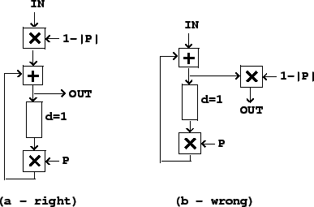
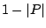
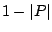

In some recursive filter designs, changing the coefficients of the filter can inject energy into the system. A physical analogue is a child on a swing set. The child oscillates back and forth at the resonant frequency of the system, and pushing or pulling the child injects or extracts energy smoothly. However, if you decide to shorten the chain or move the swing set itself, you may inject an unpredictable amount of energy into the system. The same thing can happen when you change the coefficients in a resonant recirculating filter.
The simple one-zero and one-pole filters used here don't have this difficulty; if the feedback or feed-forward gain is changed smoothly (in the sense of an amplitude envelope) the output will behave smoothly as well. But one subtlety arises when trying to normalize a recursive filter's output when the feedback gain is close to one. For example, suppose we have a one-pole low-pass filter with gain 0.99 (for a cutoff frequency of 0.01 radians, or 70 Hertz at the usual sample rate). To normalize this for unit DC gain we multiply by 0.01. Suppose now we wish to double the cutoff frequency by changing the gain slightly to 0.98. This is fine except that the normalizing factor suddenly doubles. If we multiply the filter's output by the normalizing factor, the output will suddenly, although perhaps only momentarily, jump by a factor of two.
|  |
The trick is to normalize at the input of the filter, not the output.
Figure 8.21 (part a) shows a complex recirculating filter, with
feedback gain  , normalized at the input by  so that the peak gain
is one. Part (b) shows the wrong way to do it, multiplying at the output.
, normalized at the input by  so that the peak gain
is one. Part (b) shows the wrong way to do it, multiplying at the output.
Things get more complicated when several elementary recirculating filters are put in series, since the correct normalizing factor is in general a function of all the coefficients. One possible approach, if such a filter is required to change rapidly, is to normalize each input separately as if it were acting alone, then multiplying the output, finally, by whatever further correction is needed.